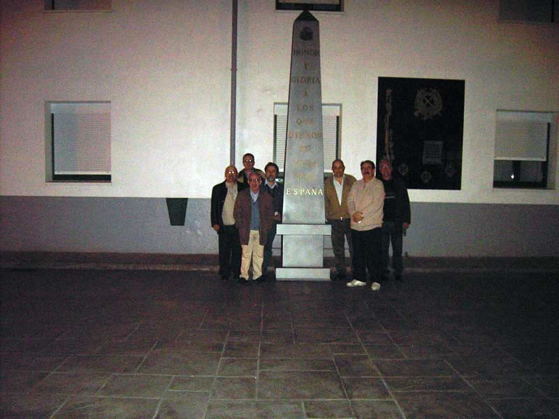

Encuentro en Santoña |
|
 Ya de regreso a la residencia del Patronato, a las 01'55 horas de la madrugada, nos hicimos esta foto en el patio junto al monolito a los caídos. Observaréis que no está Joaquín Lacaci. Hacía ya muchas lunas que marchóse, junto a su esposa, a planchar la oreja. Por cierto. procedencias: yo (Wetomaster) de Huelva. Jaime, de Madrid. carlos Bitaubé, de Madrid. Manolo Sánchez, de Cáceres. Fernando Ferrer, de Madrid. Carlos Pertíñez, de Tarragona y Jesús María Gª Hueto, de Huelva. Joaquín Lacaci, de Cádiz. |